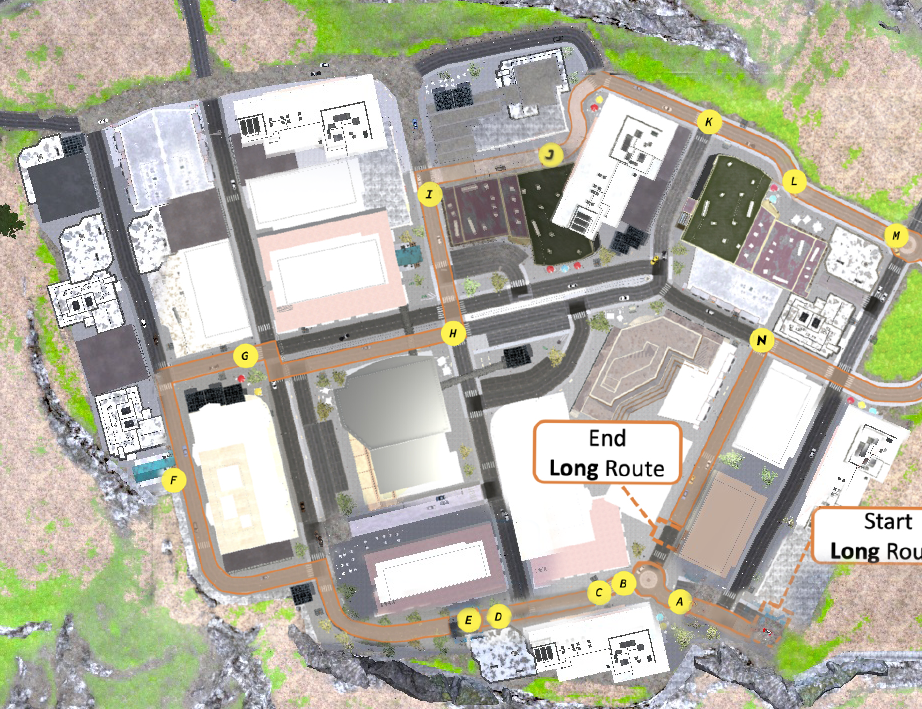
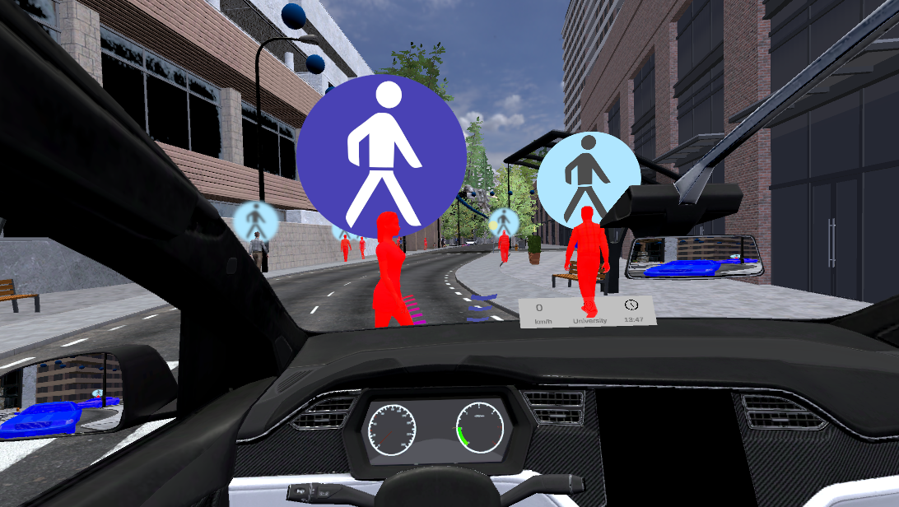
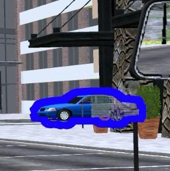
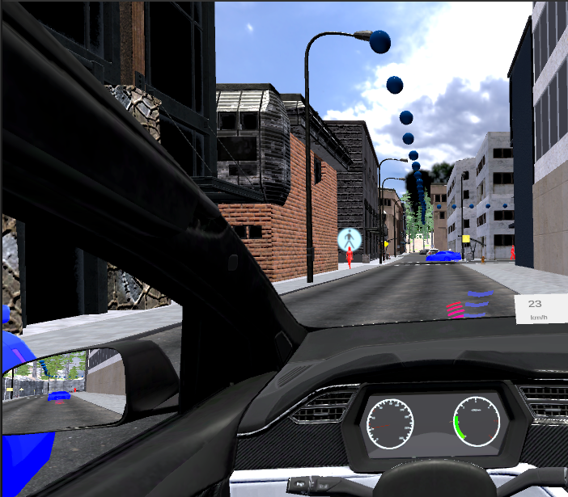
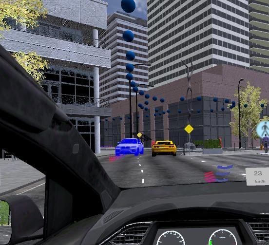
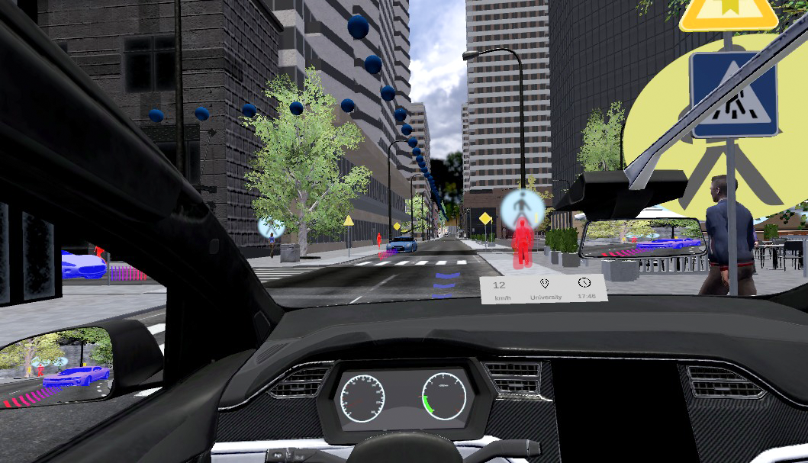

Visualisation conditions
- Optimised visualisation
- Static visualisation
- No visualisation
Unity research prototype · Study not conducted in this version
This was an early Unity prototype created for a planned study about trust in highly automated driving. I used it to explore reliability scenarios, visual-feedback ideas, and a possible 3 × 3 study design. The research direction later changed, and this version was not used with participants.
 AI-generated illustration for the automated-driving Unity prototype.
AI-generated illustration for the automated-driving Unity prototype.
Appropriate trust means that a person’s trust matches what an automated system can reliably do. Too much trust and too little trust can both cause problems. This prototype explored how in-vehicle visual feedback might help users understand different levels of system reliability.
The proposed 3 × 3 design combined three visualisation conditions with three levels of system reliability.
The idea was to compare whether adaptive, human-in-the-loop optimisation could support trust more effectively than a fixed visualisation or no visualisation.

I translated the study idea into a Unity prototype. I worked on the experimental structure, implemented reliability-related scenarios, explored different visual-feedback concepts, and prepared the technical setup for the proposed comparison.
The prototype represented reliability through events and visual changes inside an automated-driving scene. The scenarios included pedestrian crossings, false-positive and false-negative detections, occluded areas, perception-coverage cues, trajectory displays, and segmentation-based highlighting.
Pedestrian events were used to test how visual feedback could communicate a road user’s presence under different reliability levels.
False-positive and false-negative examples represented cases where the system detected something incorrectly or missed a relevant road user.
Trajectory and segmentation cues were explored as ways of showing expected movement and highlighting objects or areas that were relevant to the automated system.
The prototype explored several visual concepts for communicating reliability-related information inside the driving scene.
A pedestrian icon was used to explore how the interface could draw attention to a crossing event.

Occlusion highlighting represented areas where a pedestrian or another road user might be hidden or missed.

Coverage visualisation showed which parts of the environment were observed by the system and which areas remained uncertain.

Trajectory cues showed expected movement paths to help the user understand what might happen next.

Segmentation-based highlighting applied visual emphasis to scene objects at rates linked to the planned reliability condition.

This project ended at the prototype and study-design stage. No participant data were collected with this version. The research direction was later revised and developed into a separate participant study, which is presented on the Trust Calibration HITL-MOBO project page.